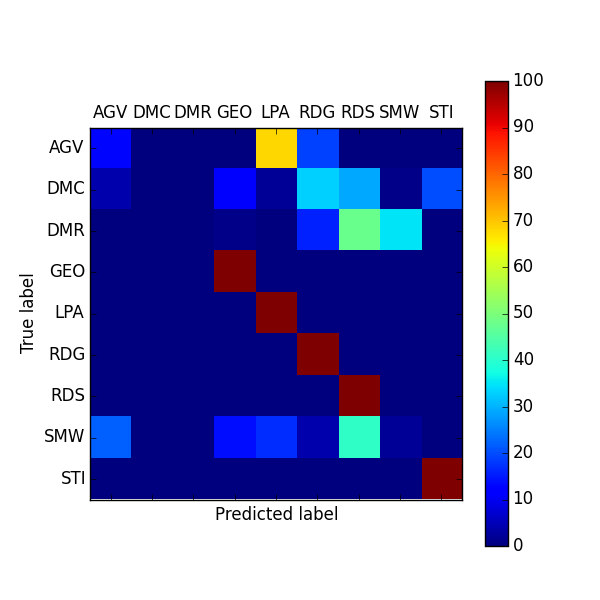
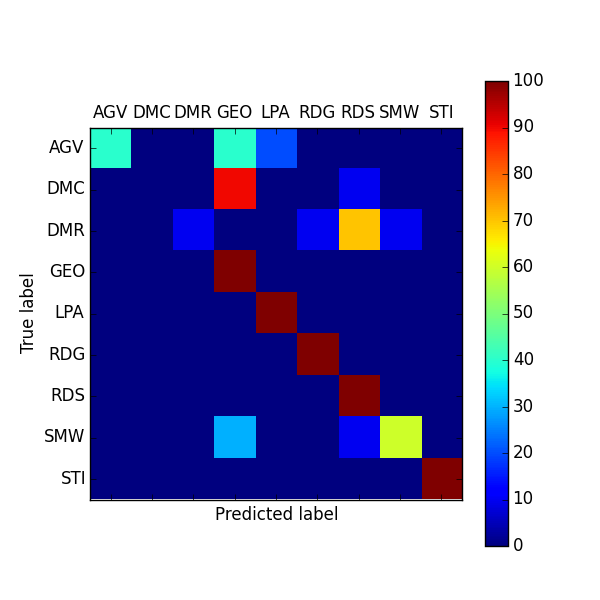
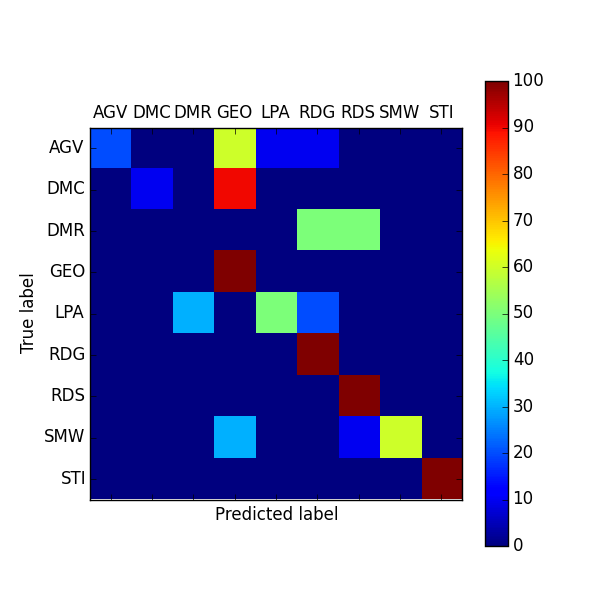

Evaluating the Accuracy and Efficiency of Complex Network Classification Algorithms
Margaret Bray, Vicki Stover-Hertzberg
Department of Biostatistics and Bioinformatics
Rollins School of Public Health
Emory University
November 23, 2014
Empirical Networks
A network formed through observation of any real-world phenomena.
Computer Networks
- World Wide Web
- Internet
- Routers(?)
Social and Public Health Netowkrs
- Friendships
- Sexual Relationships
- Twitter Followings
Biological and Molecular Networks
- Food web
- Metabolic
- Protein-protein interactions
- Neurological
Model Networks
A network not based directly on any real-world system, though potentially motivated by one.
These are built by following a prescribed algorithm, also referred to as a growth mechanism.
Model networks are either growing or static.
Examples of Model Networks
| Aging Vertex | AGV | Growing |
| Duplication-Mutation | DMC | Growing |
| -Complementation | ||
| Duplication-Mutation with | DMR | Growing |
| Random Mutation | ||
| 3D Geometric | GEO | Static |
| Linear Preferential Attachment | LPA | Growing |
| Random Growing | RDG | Growing |
| Random Static | RDS | Static |
| Small-World | SMW | Static |
| Stickiness Index | STICKY | Growing |
What does it mean to classify a network?
To determine a growth mechanism whose created networks most closely mimic the empirical model under investigation based upon some set of network features or measures.
Why is network classification beneficial?
-
- Increase understanding of the phenomena being modeled
- Structure dictates functions
- Guide experiments
- Predict behavior and interactions
Network Classification Method Overview
- 5 classification methods considered
- 2 local properties
- Relative Graphlet Frequency (RGF)
- Graphlet Degree Distribution (GDD)
- 2 global properties
- Characteristic Curve (CC)
- Degree Distribution Distance (DDD)
- 1 mixture of both local and global properties
- Cross Scoring (CS)
DDD Matching Matrix

CCC Matching Matrix

RGF Matching Matrix
GDD (Arithmetic Mean) Matching Matrix
GDD (Geometric Mean) Matching Matrix
Calculating the Relative Graphlet Frequency
- Count the number of times each graphlet appears in the network
- Define distance
- $\mathcal{D}_{\mathcal{RGF}}=\displaystyle\sum\limits_{i=1}^{29}\left|F_{i}(\mathcal{G}_{1})-F_{i}(\mathcal{G}_{2})\right|$
where
$F_{i}(\mathcal{G}) = -log(N_{i}(\mathcal{G})/T(\mathcal{G}))$
$N_{i}$, is the number of graphlets of type $i$ $(i\in \{1,...,29\})$
$T(\mathcal{G})=\displaystyle\sum\limits_{i=1}^{29}N_{i}(\mathcal{G})$
Point of View
Press ESC to enter the slide overview.
Hold down alt and click on any element to zoom in on it using zoom.js. Alt + click anywhere to zoom back out.
Works in Mobile Safari
Try it out! You can swipe through the slides and pinch your way to the overview.
Marvelous Unordered List
- No order here
- Or here
- Or here
- Or here
Fantastic Ordered List
- One is smaller than...
- Two is smaller than...
- Three!
Transition Styles
You can select from different transitions, like:
Cube -
Page -
Concave -
Zoom -
Linear -
Fade -
None -
Default
Themes
Reveal.js comes with a few themes built in:
Default -
Sky -
Beige -
Simple -
Serif -
Night
Moon -
Solarized
* Theme demos are loaded after the presentation which leads to flicker. In production you should load your theme in the <head> using a <link>.
Global State
Set data-state="something" on a slide and "something"
will be added as a class to the document element when the slide is open. This lets you
apply broader style changes, like switching the background.
Custom Events
Additionally custom events can be triggered on a per slide basis by binding to the data-state name.
Reveal.addEventListener( 'customevent', function() {
console.log( '"customevent" has fired' );
} );
Slide Backgrounds
Set data-background="#007777" on a slide to change the full page background to the given color. All CSS color formats are supported.
Image Backgrounds
<section data-background="image.png">Repeated Image Backgrounds
<section data-background="image.png" data-background-repeat="repeat" data-background-size="100px">Background Transitions
Pass reveal.js the backgroundTransition: 'slide' config argument to make backgrounds slide rather than fade.
Background Transition Override
You can override background transitions per slide by using data-background-transition="slide".
Clever Quotes
These guys come in two forms, inline:
“The nice thing about standards is that there are so many to choose from”
and block:
“For years there has been a theory that millions of monkeys typing at random on millions of typewriters would reproduce the entire works of Shakespeare. The Internet has proven this theory to be untrue.”
Pretty Code
function linkify( selector ) {
if( supports3DTransforms ) {
var nodes = document.querySelectorAll( selector );
for( var i = 0, len = nodes.length; i < len; i++ ) {
var node = nodes[i];
if( !node.className ) {
node.className += ' roll';
}
}
}
}
Courtesy of highlight.js.
Intergalactic Interconnections
You can link between slides internally, like this.
Fragmented Views
Hit the next arrow...
... to step through ...
any type- of view
- fragments
Fragment Styles
There's a few styles of fragments, like:
grow
shrink
roll-in
fade-out
highlight-red
highlight-green
highlight-blue
current-visible
highlight-current-blue
Spectacular image!

Export to PDF
Presentations can be exported to PDF, below is an example that's been uploaded to SlideShare.
Take a Moment
Press b or period on your keyboard to enter the 'paused' mode. This mode is helpful when you want to take distracting slides off the screen during a presentation.